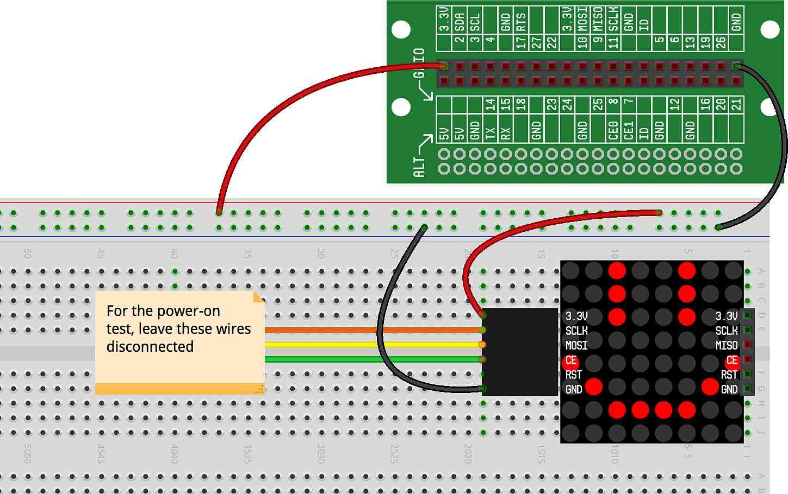
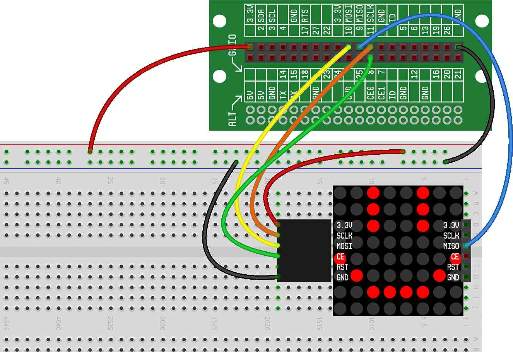
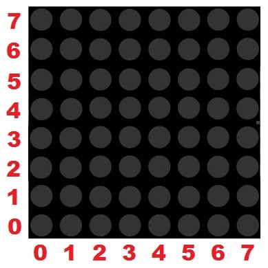
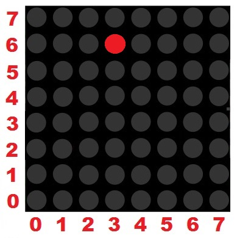

In this project, we're going to hook up our LED Matrix, and write some code to light up individual LEDs.
To get started, make sure you read concept, which introduces the LED Matrix and discusses how to mount it to the breadboard, power it up and test it.
With the cable attached to the LED Matrix, connect the 3.3V wire and the GND wire, as follows:
Once power and ground are correctly attached, you should see vertical and horizontal bars sweep across the display a single time. This is indication that the LED Matrix is powered up and working correctly.
Now that we've verified that the LED Matrix can be powered up and is working properly, we can finish wiring it so that we can start controlling it with our software. To finish wiring the LED Matrix we need to make the following connections:
Connect SCLK on the LED Matrix to SCLK on the Lid Connector Board.
Connect MOSI on the LED Matrix to MOSI on the Lid Connector Board.
Connect CE on the LED Matrix to CE0 on the Lid Connector Board.
Connect MISO on the LED Matrix to MISO on the Lid Connector Board.
Note: Both CE0 and CE1 are on the Lid Connector Board — ensure that you're connected to CE0.
Note: Use a separate jumper wire (this is not included in the LED Matrix bag, but you can use any of the provided colored wires) to connect MISO from the right side of the LED Matrix to the MISO pin on the Lid Connector Board (see the blue wire in the picture below).
Note: When using the LED Matrix, you won't be able to use GPIO7 (which is on the same pin as CE1).
Here is what the breadboard should look like with the LED Matrix fully wired:
To display graphics on our LED Matrix, we use a set of functions that allows us to create, draw, display and erase a framebuffer. We'll talk a bunch about framebuffers in an upcoming concept (), but for now, the important thing to understand is that framebuffers are the tool we use to manage the LED Matrix display.
To draw on our LED Matrix, we will rely on something called rectangular coordinates, which is a system for defining a location. Each of the 64 LEDs on our LED Matrix will be referred to by two numbers — the first number will be the distance from the left side of the LED Matrix and the second number will be the distance from the bottom of the LED Matrix.
Here is the basis for those two numbers:
The first number in our rectangular coordinates refers to the bottom row of numbers. The second number in our rectangular coordinates refers to the side row of numbers.
So, if we wanted to refer to the LED in the lower left hand corner of the LED Matrix, we would use the coordinates (0,0) — that's the LED that is 0 from the left and 0 from the bottom. And, if we wanted to refer to the LED in the upper right hand corner of the LED Matrix, we would use the coordinates (7,7).
Here is the LED at coordinates (3,6):
You'll be able to play with these coordinates in the project below.
Here is the basic code we'll use to initialize our LED Matrix and draw a single dot to it:
Let's take a look at what our code is doing:
On Line 1, we import the module we will need to initialize and use a
framebuffer (the Framebuffer() function)
On Line 2, we initialize our framebuffer. We call the
Framebuffer() function, which returns a "framebuffer" object
to our fb variable. We can now use the fb
variable to call other framebuffer functions
On Line 3, we call the framebuffer function erase(), which
erases the framebuffer
On Line 4, we call the framebuffer function point(), which
draws a point on the framebuffer, where (3,6) is the
coordinates of the point
On Line 5, we call the framebuffer function show(), which
displays the framebuffer on the LED Matrix
When you run this code, you should see a dot appear on the LED Matrix at coordinates (3,6) — which is the point we used in our example in the Info Box above.
Place a point at another location on the display. What coordinates do you need to use to put a point at the lower left corner?
Write a loop to move a dot horizontally across the screen.
Write a loop to move a dot diagonally across the screen.